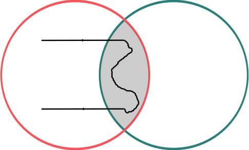
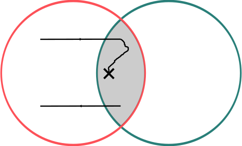
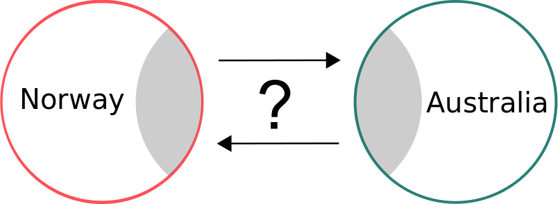
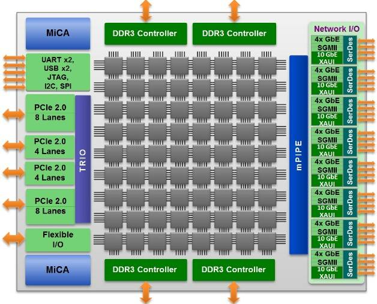

- Overview & Motivation
- CSP vs Actor Model
- Introduction to CSP
- Code examples in PyCSP
- Travelling Salesman Problem in PyCSP
- Summary
Outline
CSP Overview
- A paradigm for expressing concurrency
- Based on message-passing
- First described in a 1978 paper by Tony Hoare
- (Actor model first described in 1973)
- Key concepts
- Sequential processes
- Synchronous communication through channels
- Multiplexing of channels with choice/alternation
Two Models of Concurrency
-
Shared Memory
- Threads
- Locks
- Mutexes
-
Message Passing (CSP and Actor Model)
- Processes
- Messages
- No shared data
Shared Memory - Problem 1
 
- Program crash in critical region corrupts memory
-
- Difficult to reason about
- Hard to recover from failure
Shared Memory - Problem 2

- Where is shared memory physically located?
-
- Even harder to recover from failure
Multi/Many-core is a Reality

- Commercially available
- 72 identical cores @ 1.0 to 1.2GHz
- 256 KB L2 per core
An object oriented language is a language with good support for objects. A concurrency oriented language has good support for concurrency
Outline
- Overview & Motivation
- CSP vs Actor Model
- Introduction to CSP
- Code examples in PyCSP
- Travelling Salesman Problem in PyCSP
- Summary
Outline
- Overview & Motivation
- CSP vs Actor Model
- Introduction to CSP
- Code examples in PyCSP
- Travelling Salesman Problem in PyCSP
- Summary
PyCSP
- Python library that implements CSP
- Development started in 2006. Still under active development
- Implements all essential CSP primitives
- Transparent distributed communication using standard python modules
Process and Parallel
@process
def Process1():
time.sleep(1) # Sleep 1 second
print 'process1 exiting'
@process
def Process2():
time.sleep(2) # Sleep 2 seconds
print 'process2 exiting'
Parallel(process1(), process2()) # Blocks
print 'program terminating'
process1 exiting process2 exiting program exiting
Process and Spawn
@process
def Process1():
time.sleep(1) # Sleep 1 second
print 'process1 exiting'
@process
def Process2():
time.sleep(2) # Sleep 2 seconds
print 'process2 exiting'
Spawn(Process1(), Process2()) # Non-blocking
print 'processes started'
shutdown() # Blocks
print 'program terminating'
processes started process1 exiting process2 exiting program terminating
Channel–semantics
@process
def Process1(chan_out):
chan_out('Hello process2') # Blocks
print 'process1 exiting'
@process
def Process2(chan_in):
time.sleep(1) # Sleep 1 second
print 'reading from channel'
msg = chan_in() # Blocks
print 'message received: ', msg
chan = Channel()
Parallel(process1(chan.writer()), process2(chan.reader()))
reading from channel message received: Hello process2 process1 exiting
Channel–flexibility
@process
def Worker(input_chan):
(output_chan, work_func) = input_chan()
result = work_func()
output_chan(result)
def work():
return 2 * 2
input_chan = Channel()
Spawn(Worker(input_chan.reader()))
result_chan = Channel()
msg = (result_chan.writer(), work) # Careful, 'work' is shared reference
input_chan.writer()(msg)
result = result_chan.reader()() # Get result
AltSelect–performs choice from list of guards
@process
def Process1(input_chan, output_chan):
input_guard = InputGuard(input_chan)
output_guard = OutputGuard(output_chan, msg='hello from process1')
(chan, msg) = AltSelect(input_guard, output_guard)
if chan == input_chan:
print 'input read: ', msg
elif chan == output_chan:
print 'output written'
input, output = Channel(), Channel()
Spawn(Process1(input.reader(), output.writer()))
if random.choice([True, False]):
input.writer()('hello process1')
else:
output.reader()()
PriSelect–timeout and skip guards
@process
def Process1(input_chan):
guards = [InputGuard(input_chan), SkipGuard()]
(chan, msg) = PriSelect(guards) # Always perform skip guard last
if chan == input_chan:
print 'input read: ', msg
else:
print 'no input'
input = Channel()
Spawn(Process1(input.reader()))
guard = OutputGuard(input.writer(), msg='hello process1')
PriSelect(guard, TimeoutGuard(seconds=1))
Outline
- Overview & Motivation
- CSP vs Actor Model
- Introduction to CSP
- Code examples in PyCSP
- Travelling Salesman Problem in PyCSP
- Summary
About TSP...
Demo
Resources
- PyCSP - http://code.google.com/p/pycsp/
- Erlang - software for a concurrent world
-
Let it crash - Akka team blog
- Specific post from let it crash
Slide with Bullets
- Titles are formatted as Open Sans with bold applied and font size is set at 45
- Title capitalization is title case
- Subtitle capitalization is title case
- Subtitle capitalization is title case
- Titles and subtitles should never have a period at the end
Slide with Bullets that Build
Subtitle Placeholder
A list where items build:
- Pressing 'h' highlights code snippets
- Pressing 'p' toggles speaker notes (if they're on the current slide)
- Pressing 'f' toggles fullscreen viewing
- Pressing 'w' toggles widescreen
- Pressing 'o' toggles overview mode
- Pressing 'ESC' toggles off these goodies
Another list, but items fade as they build:
- Hover over me!
- Hover over me!
- Hover over me!
Slide with (Smaller Font)
- All links open in new tabs.
- To change that this, add
target="_self"to the link.
Code Slide (with Subtitle Placeholder)
Subtitle Placeholder
Press 'h' to highlight important sections of code (wrapped in <b>).
<script type='text/javascript'>
// Say hello world until the user starts questioning
// the meaningfulness of their existence.
function helloWorld(world) {
for (var i = 42; --i >= 0;) {
alert('Hello ' + String(world));
}
}
</script>
Code Slide (Smaller Font)
// Say hello world until the user starts questioning
// the meaningfulness of their existence.
function helloWorld(world) {
for (var i = 42; --i >= 0;) {
alert('Hello ' + String(world));
}
}
<style>
p { color: pink }
b { color: blue }
</style>
<!DOCTYPE html> <html> <head> <title>My Awesome Page</title> </head> <body> <p>Hello world</p> <body> </html>
Slide with Speaker Notes
Press 'p' to toggle speaker notes.
Presenter Mode
Add ?presentme=true to the URL to enabled presenter
mode.
This setting is sticky, meaning refreshing the page will persist presenter
mode.
Hit ?presentme=false to disable presenter mode.
Slide with Image

Slide with Image (Centered horz/vert)

Table Option A
Subtitle Placeholder
| Column 1 | Column 2 | Column 3 | Column 4 | |
|---|---|---|---|---|
| Row 1 | placeholder | placeholder | placeholder | placeholder |
| Row 2 | placeholder | placeholder | placeholder | placeholder |
| Row 3 | placeholder | placeholder | placeholder | placeholder |
| Row 4 | placeholder | placeholder | placeholder | placeholder |
| Row 5 | placeholder | placeholder | placeholder | placeholder |
Table Option A (Smaller Text)
Subtitle Placeholder
| Column 1 | Column 2 | Column 3 | Column 4 | |
|---|---|---|---|---|
| Row 1 | placeholder | placeholder | placeholder | placeholder |
| Row 2 | placeholder | placeholder | placeholder | placeholder |
| Row 3 | placeholder | placeholder | placeholder | placeholder |
| Row 4 | placeholder | placeholder | placeholder | placeholder |
| Row 5 | placeholder | placeholder | placeholder | placeholder |
Table Option B
Subtitle Placeholder
| Header 1 | placeholder | placeholder | placeholder |
|---|---|---|---|
| Header 2 | placeholder | placeholder | placeholder |
| Header 3 | placeholder | placeholder | placeholder |
| Header 4 | placeholder | placeholder | placeholder |
| Header 5 | placeholder | placeholder | placeholder |
Slide Styles
- class="red"
- class="red2"
- class="red3"
- class="blue"
- class="blue2"
- class="blue3"
- class="green"
- class="green2"
- class="green3"
- class="yellow"
- class="yellow2"
- class="yellow3"
- class="gray"
- class="gray2"
- class="gray3"
- class="gray4"
I am centered text with a
and
button.
Segue Slide
Subtitle Placeholder
Full Image (with Optional Header)
This is an example of quote text.
Slide with Iframe
<Thank You!>
Important contact information goes here.